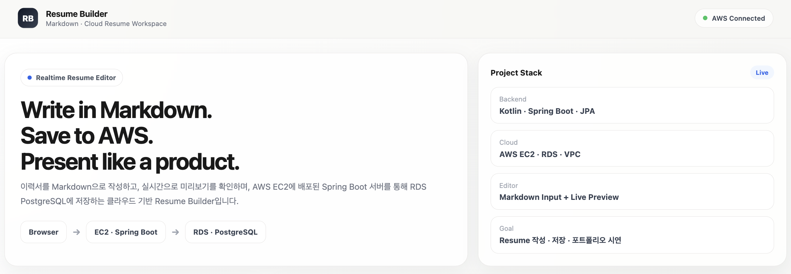
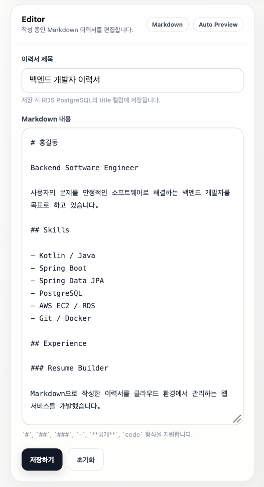
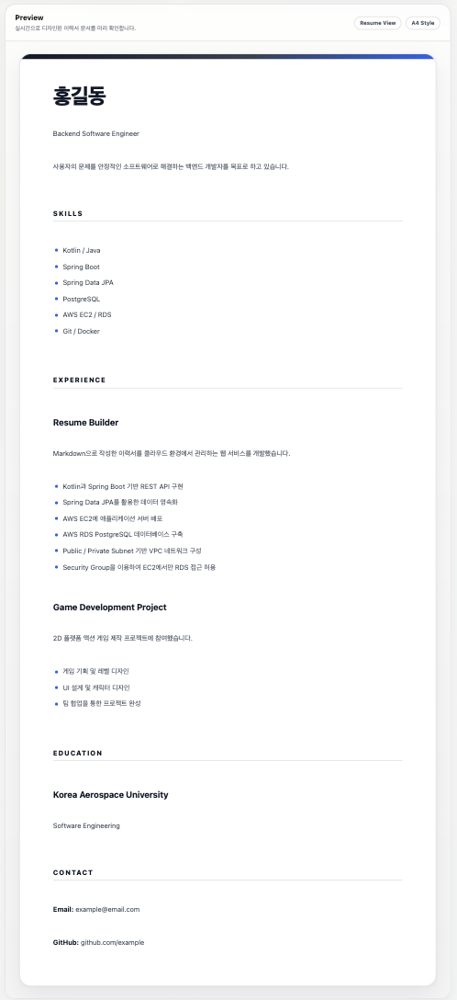

01 / PERSONAL PROJECT
Resume Builder
Markdown Resume Management Service
Markdown으로 이력서를 작성하고 실시간으로 미리보며, AWS 환경에서 Spring Boot 서버와 PostgreSQL 데이터베이스를 이용해 이력서를 저장하는 클라우드 기반 웹 서비스.

PRODUCT SCREENS
Built interface.
Markdown 입력부터 완성된 이력서 미리보기까지,
실제 구현 화면입니다.


OVERVIEW
Markdown의 간결함과
클라우드 저장을 연결하다.
Problem
이력서를 Markdown으로 간단히 작성하면서도 보기 좋은 결과물을 확인하고 저장할 수 있는 서비스를 만들고자 했습니다.
Solution
Markdown Editor와 Live Preview를 구성하고, Spring Boot REST API와 PostgreSQL을 연결했습니다. 애플리케이션은 AWS EC2에 배포하고 DB는 RDS PostgreSQL을 사용했습니다.
KEY FEATURES
Core capabilities
- Markdown 기반 Resume 작성
- 실시간 Resume Preview
- REST API 기반 Resume 저장
- Spring Data JPA 데이터 영속화
- AWS EC2 애플리케이션 배포
- AWS RDS PostgreSQL 사용
- VPC Public / Private Subnet 구성
- Security Group을 통한 EC2 → RDS 접근 제한
ARCHITECTURE
Private by design.
Security Group PostgreSQL 5432 포트는 EC2 Security Group에서만 접근 가능
IMPLEMENTATION
From application to infrastructure.
- 01
Backend
Kotlin + Spring Boot 기반으로 Controller / Service / Repository 계층 구성.
- 02
Database
Spring Data JPA를 이용해 Resume Entity와 PostgreSQL 연결.
- 03
Cloud
Spring Boot executable JAR을 EC2에 배포.
- 04
Network
RDS를 Private Subnet에 배치하고 EC2에서만 DB에 접근 가능하도록 구성.
- 05
Validation
외부에서 POST /api/resumes 요청을 전송하여 EC2 → Spring Boot → RDS PostgreSQL 저장 흐름을 실제로 검증.
PROBLEM SOLVING
Environment-aware
database connection.
Problem
로컬 개발에서는 PostgreSQL을 localhost:5432로 사용했지만, EC2 배포 후에는 localhost가 EC2 자신을 의미하여 DB에 연결할 수 없었습니다.
Solution
DB URL / Username / Password를 환경변수로 분리하고 RDS Endpoint를 사용하도록 변경했습니다.
Result
로컬 환경과 AWS 환경에서 동일한 애플리케이션 코드를 사용할 수 있게 되었습니다.
SCOPE
Implemented & next.
Implemented
- Markdown Editor
- Live Preview
- Spring Boot REST API
- PostgreSQL
- AWS EC2
- AWS RDS
- VPC / Security Group
Future Architecture
- AWS Lambda 기반 PDF Rendering
- AWS S3 기반 PDF / Profile Image 저장
TECH STACK
- Kotlin
- Spring Boot
- Spring Data JPA
- PostgreSQL
- AWS EC2
- AWS RDS
- AWS VPC
- Gradle